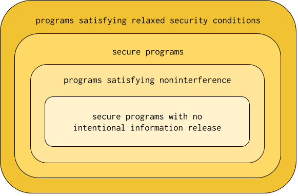

In my last blog post, I argued that noninterference is an inadequate security condition because many, if not most, secure programs have intentional information release. A thought that I did not entertain is whether noninterference can accurate classify programs with no intentional information release. Is noninterference a necessary and sufficient condition for such programs?
Let’s approach this question with a concrete example. Here is a bog standard definition of noninterference for sequential programs:
Let be a program and and be memories that have equivalent public values. Let running with as its initial memory arrive at final memory and running with as its initial memory arrive at final memory . Then satisfies noninterference when and have equivalent public values.
For a program to satisfy this definition, it must not leak the secret values in its initial memory. But we can easily imagine programs that satisfy the definition that still leak these secrets. For example:
while (secret < 0) {
secret--;
}
The program doesn’t read or write public values, so obviously any two runs that
start with the same public values will end with the same public values as well.
This means that the program satisfies noninterference as stated above. At the
same time there’s a clear way that the program leaks information: the execution
time of the program directly correlates with the value of secret. Thus if the
adversary can measure the execution time, it can glean the value of secret!
The program above is a classic example of an external timing channel, a particularly pernicious kind of side channel. The upshot is that noninterference as stated above is not a sufficient condition for secure programs with no intentional information release. The definition is, however, still necessary---all secure programs with no intentional information release should satisfy it.
Can you patch the definition so it does not admit programs with timing channels? Here’s the pessimistic take. Definitions of noninterference are usually given over the operational semantics of a program. But the operational semantics of a program is nothing but a model of a program’s execution in an actual machine. We can imagine an operational semantics with an additional “counter” component that gets incremented at every step, and a revision of noninterference that demands that two runs of a program not only have public-equivalent memories but equal counters at termination. This might work---but now you have to assume that all steps take the same amount of time, which ignores things such as cache effects and the inherent variability between instruction execution times.
In other words, it might lead to a better model, but it is a model nonetheless, and thus abstracts out some implementation details. But side effects are all about leaking information through implementation details! So unless we have a Borgesian model as exact as the program executing in a real machine, we can’t be sure that a definition of noninterference has ruled out all possible leaks through side channels.
This leads us to the conclusion that there are at least two sources of incompleteness for security conditions---that is, why programs satisfying such conditions are not necessarily secure:
- Inability to exactly capture intentional information release
- Inability to capture all possible side channels through which information can be leaked
Let’s zoom out to the bigger picture. Assume that any intentional information release you would want to have in a secure program can be captured approximately as a “relaxed” security condition (i.e. a security condition that, unlike noninterference, allows for intentional information release). Then we can visualize the space of programs as follows.

Let’s go down the sets from largest to smallest. The first set is the set of programs that satisfy relaxed security conditions---i.e., given the set of relaxed security conditions and set of programs that satisfy a particular relaxed security condition , then the largest set is . The second set is the set of all secure programs, including those with intentional information release. The third set is the set of programs satisfying some definition of noninterference. Finally, the fourth set is the set of secure programs with no intentional information release.
The second and fourth sets classifying secure programs are “fuzzy”, in that we have no formal way of characterizing such sets the way we do for the first and third sets, which classify programs that satisfy some security conditions. Two of the big research programs in language-based security is to more and more accurately characterize the second and fourth sets by way of the first and third sets. As we get better and better at characterizing intentional information release, the first set gets smaller and approaches the second set. As our operational models get better and better at capturing side channels that can leak information in programs, the third set gets smaller and approaches the fourth set. I doubt that the first and second sets and the third and fourth sets respectively will ever coincide, but it is fruitful research nonetheless to try.